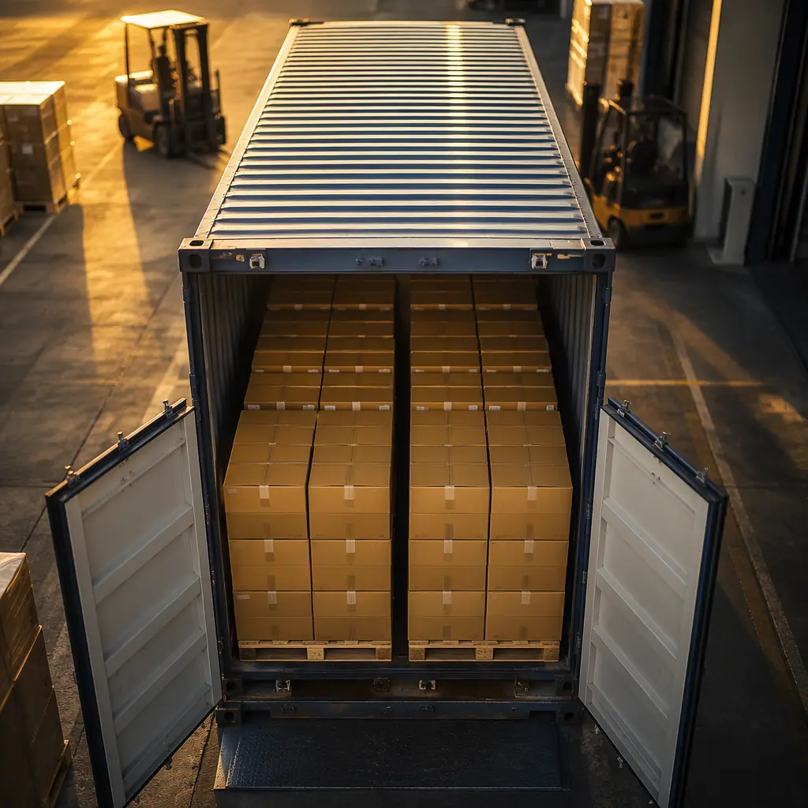

Here is a sentence that should terrify every procurement manager: your purchasing department is optimizing the 20% of PCB cost that appears on the quote — and ignoring the 80% that shows up later. A $0.15 PCB from a Shenzhen supplier doesn't cost $0.15. By the time you add ocean freight, import duties, incoming quality inspection rejects, inventory carrying costs, FX losses on CNY-denominated payments, and the engineering hours burned on communication overhead — that board costs somewhere between $0.38 and $0.52. The gap between quoted unit price and actual landed-and-usable cost is not an accounting footnote. It's the single largest source of budget variance in electronics procurement, and it's almost entirely measurable and controllable — if you know what to measure.
This guide is built for overseas procurement managers sourcing PCBs from China. It's not theory. Huaxing PCBA manufactures 500,000+ PCB assemblies annually across 8 SMT lines in an 80,000㎡ Shenzhen facility certified to ISO 9001 and IATF 16949. Every cost driver described below comes from real purchase data, real freight invoices, and real conversations with procurement teams who learned these lessons the hard way. By the end, you'll have a TCO formula you can apply to your own supplier quotes — and a strategy for cutting 25–30% from your true per-board cost without touching the unit price.
What Is PCB TCO — and Why Unit Price Is a Dangerous Metric
Total Cost of Ownership (TCO) is a procurement discipline that originated in the automotive industry — Toyota's supply chain philosophy built on the insight that the supplier with the lowest bid is rarely the cheapest. For PCB procurement, TCO means adding up every cost incurred between the moment you issue a purchase order and the moment a functional board is installed in your product, ready to ship. The categories are predictable. The surprises happen when nobody measures them.
Consider the typical procurement workflow. You receive three quotes for a 4-layer FR-4 board, 100mm × 80mm, ENIG finish, quantity 50,000 units. Supplier A quotes $0.28/unit FOB Shenzhen. Supplier B quotes $0.32/unit. Supplier C quotes $0.35/unit. Procurement selects Supplier A. Done. Six months later, the actual cost per usable board — after factoring in $12,800 in air freight for two emergency shipments, $8,400 in import duties (Supplier A's HTS classification was less favorable), a 3.2% incoming reject rate requiring rework at $1.80/board, and $6,500 in engineering time spent clarifying Gerber ambiguities the other two suppliers flagged upfront — works out to $0.41/unit. Supplier B, whose quote included clearer DFM feedback and a better duty classification, would have cost $0.36/unit all-in. The lowest unit price produced the highest total cost.
Key Takeaway: TCO is not an academic exercise. It's the difference between meeting your annual PCB budget and exceeding it by 25–35%. For a $500,000 annual PCB spend, that gap is $125,000–$175,000 — enough to fund an entire procurement headcount or buy the ERP module your team has been requesting for two years. The good news: every cost driver in the TCO equation is measurable, predictable, and negotiable. You just need to know what to track.
The 8 Hidden Cost Drivers Beyond Unit Price
These eight cost categories sit between the quoted FOB price and the actual landed-and-usable cost of a PCB. Most procurement teams track two or three of them. The teams with the lowest true costs track all eight — and use that data to make sourcing decisions that look counterintuitive on a unit-price spreadsheet but deliver 15–30% total cost savings.
Logistics and Freight — The Cost of Geography
Ocean freight for a 20-foot container from Shenzhen to Los Angeles runs $3,500–$6,000 depending on season and carrier. Air freight for the same volume runs $18,000–$35,000. But these are the obvious numbers. The hidden costs: demurrage charges when your customs broker is slow ($150–$300/day after free days), inland trucking from port to warehouse ($800–$2,200 depending on distance), and — most dangerously — the air freight scramble when a quality hold depletes your buffer stock and your assembly line is 48 hours from going dark. Our PCB Incoterms and shipping guide covers freight cost optimization in detail. The critical TCO insight: a supplier 2,000 km closer to your assembly plant may justify a 5% unit price premium through freight savings alone.
Import Duties and Tariffs — The Policy Variable
Section 301 tariffs on Chinese-origin PCBs sit at 25% on most HTS classifications, with additional rounds potentially pushing effective rates to 35–45%. But the tariff cost driver isn't just the rate — it's the valuation basis. Customs duties are assessed on the transaction value of the goods (not just the PCB unit price — freight, insurance, and certain royalties may be included depending on Incoterms). A poorly structured shipment can mean you're paying duty on freight costs. Worse: incorrect HTS classification can trigger penalties of 2–8× the underpaid duty plus interest. The procurement teams with the lowest duty burden invest in a customs broker relationship, not just a freight forwarder. See our import duty and tariff guide for a full breakdown of HTS classification and country-of-origin strategies.
Quality Failures and Rework — The Recurring Tax
A 2% incoming quality reject rate sounds manageable. On a 50,000-unit order, that's 1,000 boards — each requiring rework inspection, disposition (scrap vs. rework), and potentially a replacement order with expedited lead time. At $1.50–$4.00 in rework cost per board (labor, equipment time, re-testing), that 2% reject rate adds $3,000–$8,000 to the order cost. But the larger cost is systemic: every quality failure erodes production schedule confidence, forcing you to carry larger safety stock (see driver #4) and raising the probability of line-down events. The TCO math says a supplier with a 0.5% defect rate at a 5% unit price premium is cheaper than a supplier with a 2% defect rate at a discount — especially for boards going into products with high assembly labor cost. For a structured approach to qualifying suppliers with low failure rates, start with our 10-point supplier audit checklist.
Inventory Carrying Costs — The Capital Trap
Inventory carrying cost is the sum of warehouse space, insurance, obsolescence risk, and — most importantly — the cost of capital tied up in stock. The standard carrying cost rate is 18–25% of inventory value per year. For PCB inventory, add a layer of risk: ENIG surface finish has a 6–12 month shelf life before solderability degrades. Moisture-sensitive boards require humidity-controlled storage and baking before assembly if MSL exposure limits are exceeded. The TCO implication: a procurement strategy that saves 3% on unit price but requires holding 12 weeks of inventory instead of 4 weeks adds carrying costs that can exceed the unit price savings. For a $200,000 inventory holding, an extra 8 weeks of carrying cost at 22% annual rate costs roughly $6,800 — potentially wiping out a 3% unit price improvement.
Payment Terms and FX Exposure — The Currency Surprise
Most Chinese PCB suppliers quote in USD but operate in CNY. When the RMB strengthens by 5% against the dollar over a 6-month contract period, the supplier's margin compresses — and they may respond by delaying shipments, reducing quality spend, or requesting mid-contract price renegotiation. Foreign exchange exposure is a real TCO line item. The procurement fix: negotiate shorter contract cycles (quarterly rather than annual) when currency volatility is high, or lock in an exchange rate band with a renegotiation trigger. Payment terms themselves are also a TCO driver: paying 30% upfront on a $150,000 order ties up $45,000 in working capital for 4–8 weeks before delivery — at your company's cost of capital, that's real money. Net-30 post-delivery terms from an established supplier reduce TCO even if the unit price is slightly higher.
Certification and Compliance Testing — The One-Time (and Recurring) Cost
Certification costs hit procurement budgets in two waves. Wave one is the initial qualification: UL recognition ($8,000–$15,000 per board design), IPC Class 2/3 verification, and any industry-specific testing (automotive PPAP at $25,000–$80,000, medical device validation at $15,000–$30,000). Wave two is the recurring surveillance: annual UL factory inspections, periodic cross-section analysis, and re-certification when laminate or process chemistry changes. A supplier that handles certification documentation in-house and maintains active UL file numbers reduces your TCO by $2,000–$5,000 per design versus a supplier that requires you to manage the certification process independently. For the full landscape of PCB compliance requirements, see our PCB manufacturing cost drivers guide — certification is a cost factor that procurement managers consistently under-budget.
Communication and Project Management Overhead — The Engineering Time Sink
Every email clarifying a Gerber ambiguity, every WeChat message at 10pm your time to confirm a stackup change, every hour your NPI engineer spends re-drawing a fabrication note because the supplier's English-language DFM report was ambiguous — these are TCO line items. A procurement team managing 3 PCB suppliers with poor communication practices can burn 15–25 engineering hours per month on clarification alone. At a fully loaded engineering cost of $85–$150/hour, that's $15,300–$45,000 annually — enough to fully fund the unit-price premium of working with a supplier whose DFM reports are clear, whose CAM engineers speak technical English, and who resolves ambiguities proactively rather than waiting for your team to discover them during incoming inspection.
Warranty and Returns — The Long Tail
PCB field failures don't just cost you a replacement board. They cost you: field service dispatch ($200–$800 per incident), reverse logistics and failure analysis ($500–$1,500 per batch investigation), and — for regulated industries — potential recall liability. A 0.1% field failure rate on 100,000 units means 100 failures in the field. If each failure costs $350 in warranty service (parts + labor + shipping), that's $35,000 in warranty cost attributable to PCB quality. The TCO calculation: a supplier whose process capability (Cpk) history shows 1.67+ on critical dimensions (indicating <1 PPM defect potential) may charge 8% more per unit — and save you 10× that premium in avoided warranty claims. Always request process capability data during supplier qualification. Suppliers who can't provide it are telling you something about their quality systems.
The TCO Hierarchy: Of the 8 cost drivers, logistics (#1), duties (#2), and quality failures (#3) typically account for 55–70% of the gap between unit price and true cost. These three are also the most immediately actionable — you can renegotiate Incoterms, review HTS classifications, and implement incoming quality inspection protocols within a single quarter. Start there. Attack inventory (#4), payment terms (#5), and certification (#6) in the following quarter. Communication overhead (#7) and warranty (#8) deliver compounding savings over time — the earlier you address them, the larger the lifetime benefit.
How to Calculate Your Real PCB Cost — A TCO Formula for Procurement
The TCO formula isn't complicated. It's addition. What's complicated is knowing which numbers to add — and being honest about what they actually are. Here's the formula, then we'll walk through three real sourcing scenarios.
PCB TCO per Board = (Unit Price × Quantity + Freight + Insurance + Import Duties + Brokerage Fees + Incoming Inspection Cost + Rework Cost + Inventory Carrying Cost + Certification Amortization + Communication Overhead + Warranty Reserve) ÷ Usable Boards Received
The denominator — usable boards — is where most procurement calculations break. If you ordered 50,000 boards but 1,500 failed incoming inspection and 500 more were damaged in transit, your denominator is 48,000, not 50,000. That 4% yield loss is a cost multiplier on every other line item.

Below is a realistic comparison of three sourcing scenarios for the same PCB — a 4-layer FR-4 board, 100mm × 80mm, ENIG, volume 50,000 units. The unit prices differ. The true costs differ far more.
| Cost Component | Supplier A — Discount Fab Shenzhen, Spot Buy | Supplier B — Mid-Tier Fab Shenzhen, Contract | Supplier C — Premium Partner Shenzhen, VMI Program |
|---|---|---|---|
| Unit Price (FOB, per board) | $0.28 | $0.32 | $0.37 |
| Order Quantity | 50,000 | 50,000 | 50,000 |
| Ocean Freight (per board) | $0.08 | $0.07 | $0.06 |
| Import Duty (25% on CIF value) | $0.09 | $0.10 | $0.11 |
| Incoming QC Reject Rate | 3.2% | 1.1% | 0.4% |
| Rework Cost (per usable board) | $0.06 | $0.02 | $0.01 |
| Inventory Carrying Cost (per board) | $0.04 | $0.03 | $0.01 |
| Comm. / PM Overhead (per board) | $0.05 | $0.03 | $0.01 |
| Certification Amortization | $0.02 | $0.01 | $0.01 |
| Warranty Reserve | $0.03 | $0.02 | $0.01 |
| True Cost Per Usable Board | $0.44 | $0.36 | $0.34 |
| Usable Boards Received | 48,400 | 49,450 | 49,800 |
| Total Order Cost | $21,296 | $17,802 | $16,932 |
The TCO Surprise: Supplier C — the one with the 32% higher unit price ($0.37 vs. $0.28) — delivers the lowest true cost per usable board at $0.34. That's a 23% savings versus Supplier A's $0.44 true cost. On an annual volume of 250,000 boards, choosing Supplier C over Supplier A saves $25,000 — while the unit-price-only comparison would have pointed procurement in exactly the wrong direction. This is why procurement managers who optimize on unit price alone are leaving money on the table.
The formula scales to any board complexity. For a 12-layer HDI board with blind and buried vias, the unit price might be $4.80, and the hidden-cost multiplier is proportionally similar — the same freight, duty, and quality-failure dynamics apply. The only difference is that quality failures on an HDI board cost more to rework and carry higher warranty risk (field failures in a BGA-heavy HDI design are harder to diagnose and repair). Our PCB cost factors guide breaks down how each technical specification — layer count, material, surface finish, via structure — drives both unit price and downstream TCO.
TCO Optimization Strategies for Procurement Managers
Reducing PCB total cost of ownership isn't about finding a supplier who's 5% cheaper. It's about restructuring procurement terms, logistics, inventory strategy, and supplier relationships so that the hidden-cost multipliers shrink across the board. The four strategies below deliver the highest TCO reduction per dollar of procurement effort.
Volume Consolidation — Fewer Suppliers, Lower Total Cost
Every additional PCB supplier in your approved vendor list adds: a separate incoming inspection protocol, a separate freight consolidation process, separate certification maintenance, and separate communication overhead. Procurement teams that consolidate 5–8 PCB suppliers into 2–3 strategic partners typically reduce TCO by 12–18% — not from volume discounts (though those help), but from collapsing the duplicate overhead. A single supplier managing $400,000 in annual PCB volume can amortize their quality engineering time, DFM review process, and customer service bandwidth across a larger relationship — reducing the per-unit overhead cost for every board they ship. The counter-argument is supplier dependency risk, which is valid. The counter-counter-argument: managing two deep strategic relationships with real second-source qualification (not paper qualification) is safer and cheaper than managing six shallow transactional relationships, as discussed in our blanket order vs. spot buy guide.
Vendor-Managed Inventory (VMI) — Shift the Carrying Cost
Under a VMI arrangement, the PCB supplier holds 4–8 weeks of finished board inventory at their facility, releasing shipments against your pull signals. The cost dynamics are transformative: the supplier bears the inventory carrying cost (warehouse space, insurance, working capital), and you eliminate the safety-stock bulge on your balance sheet. The supplier charges a 3–5% unit price premium for the service — but when you net out the carrying cost savings (18–25% annual cost of capital on inventory you no longer hold), VMI typically reduces TCO by 6–10% versus self-managed inventory for programs above $100,000 annual PCB spend. Our VMI and consignment stock guide walks through the detailed economics and implementation checklist.
Long-Term Contracts — Lock in the Rate, Lock out the Volatility
A 12-month blanket order with quarterly releases provides three TCO advantages over spot-buy procurement. First, the supplier can plan raw material purchases (laminate, copper foil, chemistry) in bulk, reducing their input costs — savings that flow to your unit price. Second, fixed pricing removes FX volatility from your P&L for the contract period. Third, the supplier commits production capacity to your program, eliminating the risk of being bumped when a larger customer places a rush order. The trade-off: you lose the flexibility to chase the spot market if copper prices drop mid-contract. For most programs above $50,000 annual PCB spend, the stability premium outweighs the spot-market option value. Our blanket order vs. spot buy comparison includes a decision matrix to help you choose the right contracting model for each program.
Local Warehousing and Nearshoring — Shorten the Logistics Tail
A PCB supplier who maintains a bonded warehouse or consignment hub in your region eliminates the most unpredictable cost driver in the TCO equation: emergency logistics. When a quality hold or demand spike requires additional boards in 48 hours, pulling from a regional hub costs $30–$80 in domestic shipping versus $3,000–$8,000 in international air freight. The hub itself carries a cost — typically $1,500–$3,500/month for a managed warehousing arrangement — but the math is straightforward: if you've triggered even two emergency air freight shipments in the past 12 months, the hub would have paid for itself. Procurement teams sourcing from China should ask every potential PCB supplier: "Do you have warehousing capacity in our region, and what does the consignment model look like?" The answer reveals whether the supplier thinks in unit price or total cost.
Implementation Sequence: Start with consolidation (#1) and long-term contracting (#3) — these require procurement authority but minimal operational change. They also establish the volume commitment that makes VMI (#2) feasible. Implement VMI in quarter two, once the supplier relationship is stable enough to trust with inventory management. Add regional warehousing (#4) when the volume and urgency profile justify the fixed cost. This sequence delivers compounding TCO reductions — each strategy amplifies the savings from the previous one — rather than trying to do everything at once and overwhelming both your team and your supplier.
Summary: The $0.15 Board That Really Costs $0.45
The core insight of PCB total cost of ownership is not complicated: the unit price on a supplier's quote covers a minority of the true cost of getting a functional, reliable board into your product. The majority sits in the eight cost drivers detailed above — logistics, duties, quality, inventory, payment terms, certification, communication overhead, and warranty. Every one of them is measurable. Every one is controllable. And together, they represent the highest-ROI cost optimization opportunity in electronics procurement.
If you take one action from this guide, let it be this: run a TCO calculation on your top three PCB part numbers using the formula above. Use real data — pull the freight invoices, the incoming QC reports, the engineering time logs, and the warranty claim records. Fill in the spreadsheet honestly. Compare the true cost per usable board against the unit price you've been optimizing around. The gap will almost certainly be 25–40%. That gap is your cost reduction roadmap for the next four quarters.
At Huaxing PCBA, we've built our entire service model around TCO reduction for overseas procurement managers. Our 8 SMT lines and 80,000㎡ Shenzhen facility provide the capacity depth for volume consolidation. Our ISO 9001 and IATF 16949 certifications and >98.5% first-pass yield reduce quality-failure and certification overhead to near zero. Our VMI programs with 4–8 week buffers, combined with long-term blanket order frameworks, shift inventory carrying costs off your balance sheet. And our English-fluent engineering team — with dedicated DFM review on every order — collapses the communication overhead that bleeds procurement budgets silent. Start with our cost drivers deep-dive to understand what really determines your PCB price, or contact our team for a TCO analysis of your current sourcing profile. The spreadsheet is free. The savings are real.